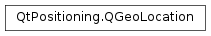

QGeoLocation¶
Synopsis¶
Functions¶
- def
__eq__(other) - def
__ne__(other) - def
address() - def
boundingBox() - def
coordinate() - def
isEmpty() - def
setAddress(address) - def
setBoundingBox(box) - def
setCoordinate(position)
Detailed Description¶
The
PySide2.QtPositioning.QGeoLocationclass represents basic information about a location.A
PySide2.QtPositioning.QGeoLocationconsists of a coordinate and corresponding address, along with an optional bounding box which is the recommended region to be displayed when viewing the location.
-
class
PySide2.QtPositioning.QGeoLocation¶ -
class
PySide2.QtPositioning.QGeoLocation(other) Parameters: other – PySide2.QtPositioning.QGeoLocationConstructs an new location object.
Constructs a copy of
other
-
PySide2.QtPositioning.QGeoLocation.address()¶ Return type: PySide2.QtPositioning.QGeoAddressReturns the address of the location.
-
PySide2.QtPositioning.QGeoLocation.boundingBox()¶ Return type: PySide2.QtPositioning.QGeoRectangleReturns a bounding box which represents the recommended region to display when viewing this location.
For example, a building’s location may have a region centered around the building, but the region is large enough to show it’s immediate surrounding geographical context.
-
PySide2.QtPositioning.QGeoLocation.coordinate()¶ Return type: PySide2.QtPositioning.QGeoCoordinateReturns the coordinate of the location.
-
PySide2.QtPositioning.QGeoLocation.isEmpty()¶ Return type: PySide2.QtCore.boolReturns true if all fields of the location are 0; otherwise returns false.
-
PySide2.QtPositioning.QGeoLocation.__ne__(other)¶ Parameters: other – PySide2.QtPositioning.QGeoLocationReturn type: PySide2.QtCore.boolReturns true if this location is not equal to
other, otherwise returns false.
-
PySide2.QtPositioning.QGeoLocation.__eq__(other)¶ Parameters: other – PySide2.QtPositioning.QGeoLocationReturn type: PySide2.QtCore.boolReturns true if this location is equal to
other, otherwise returns false.
-
PySide2.QtPositioning.QGeoLocation.setAddress(address)¶ Parameters: address – PySide2.QtPositioning.QGeoAddressSets the
addressof the location.
-
PySide2.QtPositioning.QGeoLocation.setBoundingBox(box)¶ Parameters: box – PySide2.QtPositioning.QGeoRectangleSets the
boundingBoxof the location.
-
PySide2.QtPositioning.QGeoLocation.setCoordinate(position)¶ Parameters: position – PySide2.QtPositioning.QGeoCoordinateSets the
coordinateof the location.
© 2018 The Qt Company Ltd. Documentation contributions included herein are the copyrights of their respective owners. The documentation provided herein is licensed under the terms of the GNU Free Documentation License version 1.3 as published by the Free Software Foundation. Qt and respective logos are trademarks of The Qt Company Ltd. in Finland and/or other countries worldwide. All other trademarks are property of their respective owners.